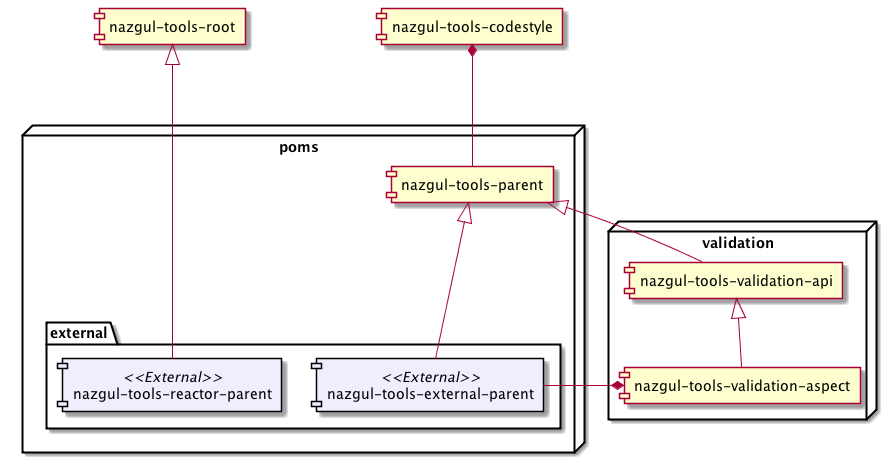

Nazgul Tools: External Parent - overview
There are 3 POM projects to mind when you are using the Nazgul Framework: Tools reactor to enrich and simplify your project development. Each of these projects contain a single POM intended to be used as parent for other POMs. However, the tasks and uses of these 3 POM projects differ:
-
nazgul-tools-parent: The root of the parent pom chain, the Nazgul Tools Parent POM defines a lot of build mechanics, implying maven plugins and their configuration. Most of the configuration files for plugins using configuration files is actually located in the Nazgul Tools: Codestyle project and included by dependency, but some plugin configuration is given directly in the Nazgul Tools: Parent POM. The Nazgul Tools: Parent POM is not intended to be included as parent directly in your development projects; use either of the POMs below instead.
-
nazgul-tools-external-parent: This is a POM intended as parent for projects which produce an artifact. Such projects typically have a POM whose packaging is JAR, WAR, EAR or bundle - but typically not with packaging POM and not defining any modules. The nazgul-tools-external-parent POM extend the nazgul-tools-parent POM by including some basic aspects which can be used to ensure that objects are created with correct state (i.e. validate the internal state of objects). Typically, state validation is done after calling a constructor or after converting an object from another form (like XML or JSON during transport).
-
nazgul-tools-external-reactor: This is a POM intended as parent for projects that do not produce artifacts, but instead define the build reactor. Such projects normally have “pom” packaging and define modules.
What is the difference between a Parent and a Reactor POM?
The POM defines lots of configuration and build settings for Maven projects. The Nazgul Framework divides the POMs in 2 categories:
| Type | Leaf? | Children? | Description |
|---|---|---|---|
| Parent | Yes | No | Used as parents for projects producing artifacts and not having any modules (project children) |
| Reactor | No | Yes | Used as parents for projects not producing artifacts and having modules (project children) |
Parent poms define dependencies and plugins required to produce an artifact. Parent poms are intended to be used as parents for projects producing artifacts and not having any modules (project children). The Nazgul Framework structures projects in leaf projects which create artifacts, and non-leaf projects which create the build reactor by defining modules.
Reactor poms define the build reactor, implying that they are parents for POMs which have POM packaging and defines modules.
The structure of the Nazgul Framework: Tools reactor is shown in the illustration below. The POMs marked “external” are intended for use as parent poms in your project, for parent and reactor POMs respectively.
